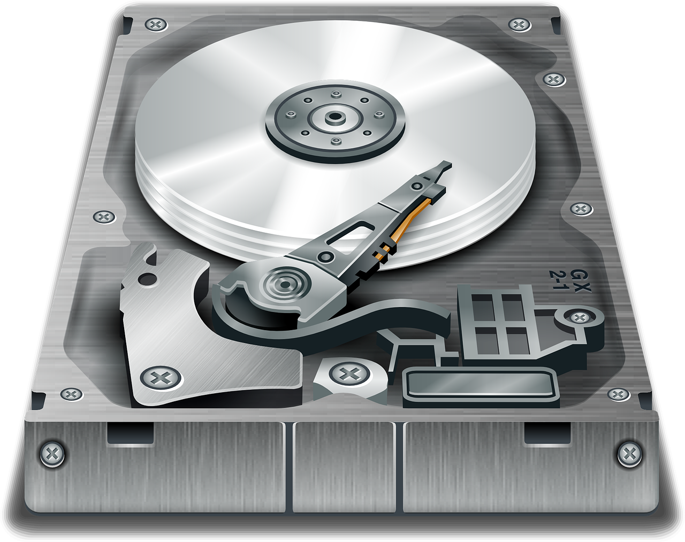
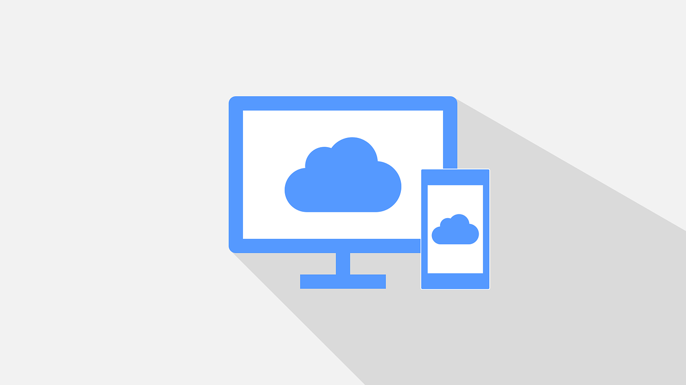

Les sauvegardes: Nous utilisons de nombreux appareils numériques pour créer et stocker des informations.
La restauration : Cette opération réalise la reconstruction des données originales à partir d’une copie de sauvegarde ou d’archivage. Ce concept regroupe la préparation et la recopie proprement dite des données, certaines actions supplémentaires pour rendre les données exploitables sont parfois nécessaires.
Pourquoi est-il si important de sauvegarder ?
La sauvegarde permet de mettre en sécurité ses données face l’ensemble des risques :
Failles techniques (Panne, matériel obsolète)
Cyberattaques (virus, rançongiciels...)
Vols et dégradations
Sinistres (incendies, dégâts des eaux...)
Actions humaines (suppression volontaire ou accidentelle de fichiers ou dossiers)
Comment sauvegarder ses données informatiques ?
Le support externe : 
Il existe plusieurs types de supports externes : les disques durs NAS, les disques durs SSD, les disques durs portables etc… Les disques SSD sont ultra rapides et permettent de sauvegarder des To, mais ils sont couteux. Le plus importants c’est de sauvegarder vos données sur plusieurs supports au même temps.
Le Cloud : 
On peut aussi sauvegarder ses données en ligne. En stockant ses fichiers sur le cloud, on peut les retrouver à n’importe quel moment et depuis n’importe quel ordinateur ou smartphone. Plusieurs sociétés proposent des services de stockage Cloud (Google, Microsoft, Amazon, SFR, Dropbox…).